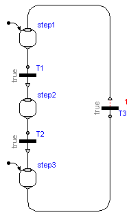
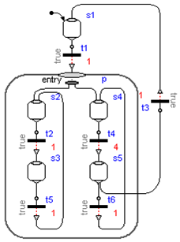
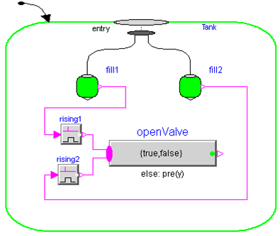
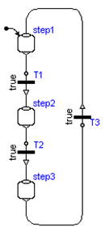

Modelica_StateGraph2.UsersGuide.Tutorial.SafeStateGraphs
Modelica_StateGraph2.UsersGuide.Tutorial.SafeStateGraphs
Modelica_StateGraph2.UsersGuide.Tutorial.SafeStateGraphsIn this section it will be discussed in which sense "StateGraph2" models are "safe". This section consists of the following sub-sections:
| Name | Description |
|---|---|
| Valid Graph Structures | |
| Single Assignment Rule | |
| Bounded Event Iterations |
Modelica_StateGraph2.UsersGuide.Tutorial.SafeStateGraphs.ValidGraphStructuresContrary to Modelica.StateGraph (version 1 of the library which is distributed with the Modelica Standard Library since 2004), only valid graph structures are accepted for the Modelica_StateGraph2 library. Wrong graph structures result in translation errors of the model.
For example, the model of the next Figure gives a translation error, because it has two initial steps:

Also, the model of the next Figure gives a translation error, because a branch of the Parallel component branches wrongly out of the component.

More examples of wrong StateGraph2 models that result in translation errors are available here.
Modelica_StateGraph2.UsersGuide.Tutorial.SafeStateGraphs.SingleAssignmentRuleIn all state machine formalisms problems are present when assignments to the same variables are performed in branches that are executed in parallel. Typically, actions are formulated within a step. Such actions are, e.g., distinguished as entry, normal, exit and abort actions. For example, a valve might be opened by an entry action of a step and might be closed by an exit action of the same step. This widly used standard approach becomes critical, when the same variable is assigned in graphs that are executed in parallel, because it is then not clear which value the variable will have, and different tools might give different results.
In StateGraphs, it is not possible to assign the same variable in graphs that are executed in parallel, due to Modelicas "single assignment rule" that requires that every variable is defined by exactly one equation. This feature of a StateGraph2 is very useful, since it allows a Modelica translator to guarantee that a given StateGraph2 has always deterministic behaviour without conflicts. In other state diagram methodologies this is much more cumbersome. For example, if two steps are executed in parallel and both step actions modify the same variable, the result is either non-deterministic or non-obvious rules have to be defined which action takes priority. In a StateGraph2, such a situation is detected by the translator resulting in an error, since there are two equations to compute one variable.
In the Figure below an artifical example is shown how to handle such problems in a StateGraph2 model, e.g., with a MultiSwitch action block "openValve". The purpose is to set:
openValve.y = true, if Step fill1 is entered openValve.y = false, if Step fill2 is entered
and the question is which value openValve.y will have, if both steps fill1 and fill2 are executed in parallel. In the StateGraph2 model below, everything is well defined: There are two input connections to the openValve block. If both become true at the same time instant, the connection with the "lowest" index (i.e., the upper signal in the Figure) has highest priority (as defined and implemented in the MultiSwitch block). Therefore, openValve.y gets the value true, once the Parallel component is entered.

Modelica_StateGraph2.UsersGuide.Tutorial.SafeStateGraphs.BoundedEventIterations At an event instant, an iteration occurs, due to the Modelica semantics (= whenever a new event occurs, the model is re-evaluated). This means that Transitions keep firing along a connected graph, as long as the firing conditions are true. The question therefore arises, whether infinite event looping is possible? A simple example of this kind is shown in the Figure to the right. Here, all Transition conditions are true and therefore all Transitions fire forever. This is no valid StateGraph model and will result in a translation error.
In order to avoid a situation as in the Figure to the right, it is required that a StateGraph2 model has at least one delayed Transition per loop. This means that one of T1, T2, or T3, must be a delayed Transition, otherwise a translation error occurs. Since event iteration stops at a delayed Transition, infinite event looping cannot occur. This also means that at one time instant every Transition can fire at most once and therefore the number of model evaluations at an event instant is bounded by the number of Transition components.
It is still possible that infinite event looping occurs due to model errors in other parts of the model. For example, if a user introduces an equation of the form "J = pre(J) + 1" outside of a when-clause, event iteration does not stop. Although this situation is not completely satisfactory, it helps already a lot if a tool points out potential problems of a StateGraph2 model, in case delayed transitions are missing.